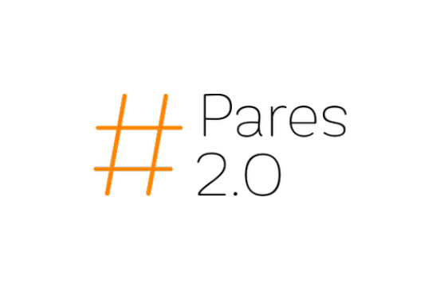

<div class="header_contenedor">
  
  <mat-icon *ngIf="_logeado" class="header_icono" (click)="abrirDialogo()"
    >account_circle
  </mat-icon>
  <div *ngIf="!_logeado" [matMenuTriggerFor]="menu" class="header_user_logeado">
    <p class="header_user_logeado_letra">{{_initial}}</p>
    <mat-menu #menu="matMenu">
      <p>{{_nickParse}}</p>
      <button mat-raised-button [routerLink]="['/usuario/', _nickParse ]">
        Acceder al Perfil
      </button>
    </mat-menu>
  </div>
</div>
